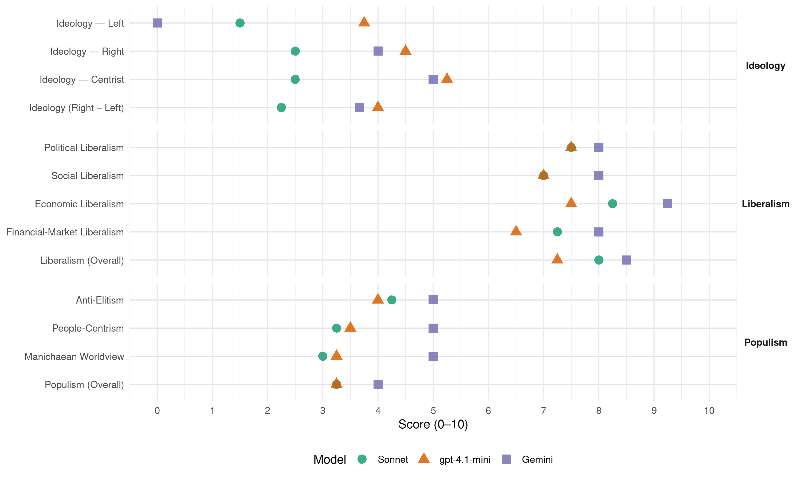

SaS (Slovakia, 2016)
manifesto_id 96440_201603
Get full text: This site shows derived annotations and short verbatim quotes only. The full manifesto text is © Manifesto Project / WZB — obtain it via manifesto-project.wzb.eu using the manifesto_id above.
Headline scores
| Dimension | Sonnet | gpt-4.1-mini | Gemini |
|---|---|---|---|
| Populism (Overall) | 3.2 | 3.2 | 4.0 |
| Anti-Elitism | 4.2 | 4.0 | 5.0 |
| People-Centrism | 3.2 | 3.5 | 5.0 |
| Manichaean Worldview | 3.0 | 3.2 | 5.0 |
| Ideology (Right − Left) | 2.2 | 4.0 | 3.7 |
| Liberalism (Overall) | 8.0 | 7.2 | 8.5 |
| Political Liberalism | 7.5 | 7.5 | 8.0 |
| Social Liberalism | 7.0 | 7.0 | 8.0 |
| Economic Liberalism | 8.2 | 7.5 | 9.2 |
| Financial-Market Liberalism | 7.2 | 6.5 | 8.0 |
Evidence per dimension
Economic Liberalism
Gemini · score 9.0 · verified · chunk 1
“zlepšenie podnikateľského prostredia”
navrhuje premyslené a funkčné riešenia na výrazné zlepšenie podnikateľského prostredia. Tušíte to
Gemini · score 9.0 · verified · chunk 2
“zavedenie rovnej dane. Nízkej a bez výnimiek”
Do prvej skupiny patrí napríklad zavedenie rovnej dane. Nízkej a bez výnimiek. Tá zvýši
Gemini · score 9.0 · verified · chunk 3
“Zrušíme reguláciu cien energií pre malé podniky”
Zrušíme reguláciu cien energií pre malé podniky, nakoľko konkurenčné prostredie je v súčasnosti
Gemini · score 10.0 · verified · chunk 4
“úplnú privatizáciu štátnych teplárenských spoločností”
Budeme presadzovať úplnú privatizáciu štátnych teplárenských spoločností v záujme zvýšenia efektívnosti týchto podnikov
gpt-4.1-mini · score 8.0 · verified · chunk 1
“zlepšenie podnikateľského prostredia”
ktorá nemá žiadne korupčné kauzy, zato navrhuje premyslené a funkčné riešenia na výrazné zlepšenie podnikateľského prostredia.
gpt-4.1-mini · score 7.0 · verified · chunk 2
“zavedenie rovnej dane. Nízkej a bez výnimiek”
Do prvej skupiny patrí napríklad zavedenie rovnej dane. Nízkej a bez výnimiek. Tá zvýši hospodársky rast, čo umožní zvýšiť zamestnanosť, znížiť výdavky na sociálnu sieť, znížiť výdavky na verejnú správu vyplývajúce z nutnosti kontrolovať zložitý daňový systém s mnohými výnimkami.
gpt-4.1-mini · score 8.0 · verified · chunk 3
“liberalizáciu trhu”
Energetika na Slovensku je v dôsledku desaťročia trvajúceho vplyvu štátu stále jedným z odvetví vyžadujúcich dôslednejšiu liberalizáciu trhu. Štátne vlastníctvo energetických podnikov vytvorilo v minulosti na trhu mnoho zásadných rozporov a deformácií.
gpt-4.1-mini · score 7.0 · verified · chunk 4
“budeme presadzovať úplnú privatizáciu štátnych teplárenských spoločností”
Budeme presadzovať úplnú privatizáciu štátnych teplárenských spoločností v záujme zvýšenia efektívnosti týchto podnikov a zníženia cien tepla pre odberateľov.
Sonnet · score 9.0 · verified · chunk 1
“znížime dane a zjednodušíme ich výber”
1. Dane Znížime dane a zjednodušíme ich výber VŠEOBECNE vrátime rovnú daň z príjmov na úroveň 19%
Sonnet · score 8.0 · verified · chunk 2
“zavedenie rovnej dane. Nízkej a bez výnimiek”
Do prvej skupiny patrí napríklad zavedenie rovnej dane. Nízkej a bez výnimiek. Tá zvýši hospodársky rast
Sonnet · score 8.0 · verified · chunk 3
“dôslednejšiu liberalizáciu trhu”
Energetika na Slovensku je v dôsledku desaťročia trvajúceho vplyvu štátu stále jedným z odvetví vyžadujúcich dôslednejšiu liberalizáciu trhu.
Sonnet · score 8.0 · verified · chunk 4
“maximálnu liberalizáciu na trhu osobnej dopravy”
Budeme presadzovať maximálnu liberalizáciu na trhu osobnej dopravy, aby každý, kto v tejto oblasti chce podnikať, mal možnosti a aby si cestujúci mohli vybrať svojho prepravcu sami.
Financial-Market Liberalism
Gemini · score 8.0 · verified · chunk 1
“pôsobil v bankovom sektore”
Od roku 2006 do konca roka 2014 pôsobil v bankovom sektore, spočiatku vo VÚB a. s.
Gemini · score 8.0 · verified · chunk 2
“vzniku skutočnej konkurencie na trhu zdravotného poistenia”
čo povedie k vzniku skutočnej konkurencie na trhu zdravotného poistenia a poistencom umožní
gpt-4.1-mini · score 6.0 · verified · chunk 2
“zavedieme povinné zverejňovanie výsledkov hospodárenia podnikov s väčšinovou účasťou štátu”
zavedieme povinné zverejňovanie výsledkov hospodárenia podnikov s väčšinovou účasťou štátu rozšírime okruh osôb povinných poskytovať informácie aj na podniky s väčšinovou účasťou štátu
gpt-4.1-mini · score 7.0 · verified · chunk 3
“transparentnosti a férovosti regulácie v sieťových odvetviach”
Za účelom transparentnosti a férovosti regulácie v sieťových odvetviach zverejníme vstupné informácie a kompletné vzorce, ktoré slúžia na výpočet cien energií alebo ich zložiek.
Sonnet · score 8.0 · verified · chunk 1
“primerane znížime odplaty pre dôchodkové správcovské spoločnosti”
postupne posilníme mieru solidarity v I. pilieri primerane znížime odplaty pre dôchodkové správcovské spoločnosti > postupne zvýšime príspevky do II. piliera
Sonnet · score 7.0 · verified · chunk 2
“neistote o pracovné miesta pri každej turbulencii na finančných trhoch”
budeme za to platiť čoraz vyššiu daň… v neistote o pracovné miesta pri každej turbulencii na finančných trhoch
Sonnet · score 7.0 · verified · chunk 3
“zneužívanie Európskej centrálnej banky (ECB) pre tlačenie peňazí”
Svoju rolu zohráva aj hrubé ignorovanie medzištátnych zmlúv, zneužívanie Európskej centrálnej banky (ECB) pre tlačenie peňazí, či morálny hazard zvaný Euroval.
Sonnet · score 7.0 · verified · chunk 4
“vyplácať zisky bánk, investorov”
namiesto toho, aby sme tie peniaze použili na ďalšie úseky po celom Slovensku. Vrátane odmeny za štúdiu realizovateľnosti… budeme vyplácať zisky bánk, investorov a rôznych konzultantov
Political Liberalism
Gemini · score 8.0 · verified · chunk 1
“Transparentnosť a boj proti korupcii”
Štátna byrokracia 18 AGENDA 2020 - Transparentnosť a boj proti korupcii 23 AGENDA 2020
Gemini · score 8.0 · verified · chunk 2
“fungovanie demokratickej spoločnosti”
Dodržiavanie zákona je fundamentálnym predpokladom pre fungovanie demokratickej spoločnosti.
Gemini · score 8.0 · verified · chunk 3
“Hodnoty demokratického právneho štátu a ľudských práv”
Hodnoty demokratického právneho štátu a ľudských práv so silnou ochranou slobôd jednotlivca musia byť
Gemini · score 8.0 · verified · chunk 4
“Slovenská republika sa podľa prvého článku ústavy”
Slovenská republika sa podľa prvého článku ústavy neviaže na žiadnu ideológiu ani náboženstvo.
gpt-4.1-mini · score 7.0 · verified · chunk 1
“budeme hájiť záujmy Slovenska a jeho občanov”
Dávam vám moje slovo, že v zásadných otázkach neotočíme, že v prvom rade budeme hájiť záujmy Slovenska a jeho občanov a že spravíme všetko preto, aby sa nám čím viac bodov z nášho programu, obzvlášť z časti AGENDA 2020, podarilo zrealizovať.
gpt-4.1-mini · score 8.0 · verified · chunk 2
“zverejňovanie platov riadiacich pracovníkov štátnej a verejnej správy”
zavedieme zverejňovanie platov riadiacich pracovníkov štátnej a verejnej správy zavedieme povinnosť zverejňovať príjmy od štátu pre všetky fyzické a právnické osoby bez rozdielu
gpt-4.1-mini · score 8.0 · verified · chunk 3
“Dodržiavanie zákona je fundamentálnym predpokladom pre fungovanie demokratickej spoločnosti”
Dodržiavanie zákona je fundamentálnym predpokladom pre fungovanie demokratickej spoločnosti. Represia je jeden z atribútov spoločnosti, použiteľných na zabezpečenie bezpečnosti občanov, poriadku a dodržiavania zákonnosti v spoločnosti.
gpt-4.1-mini · score 7.0 · verified · chunk 4
“každý má právo na kvalitné životné prostredie a ochranu prírodného a kultúrneho dedičstva”
Životné prostredie je prierezovou oblasťou spoločnosti. Od jeho kvality závisí zdravie a kvalita života obyvateľov, sociálne istoty a zamestnanosť, úroveň hospodárstva, rozvoj cestovného ruchu a spôsob užívania krajiny. Každý má právo na kvalitné životné prostredie a ochranu prírodného a kultúrneho dedičstva.
Sonnet · score 7.0 · verified · chunk 1
“boj proti korupcii”
AGENDA 2020 - Transparentnosť a boj proti korupcii; zavedieme flexibilný internetový systém pre anonymné nahlasovanie prípadov korupcie
Sonnet · score 8.0 · verified · chunk 2
“Dodržiavanie zákona je fundamentálnym predpokladom”
Dodržiavanie zákona je fundamentálnym predpokladom pre fungovanie demokratickej spoločnosti.
Sonnet · score 8.0 · verified · chunk 3
“hodnoty demokratického právneho štátu a ľudských práv”
Hodnoty demokratického právneho štátu a ľudských práv so silnou ochranou slobôd jednotlivca musia byť určujúcimi pre našu zahraničnú politiku.
Sonnet · score 7.0 · verified · chunk 4
“ideologickú a náboženskú neutralitu štátu”
Strana SaS pokladá ideologickú a náboženskú neutralitu štátu za mimoriadne dôležitý atribút spoločenského života osobitne dnes, keď sa voči modelu liberálnej demokracie stavajú rôzne radikálne a extrémistické alternatívy
Liberalism (Overall)
Gemini · score 8.0 · verified · chunk 1
“zlepšenie podnikateľského prostredia”
navrhuje premyslené a funkčné riešenia na výrazné zlepšenie podnikateľského prostredia. Tušíte to
Gemini · score 8.0 · verified · chunk 2
“zavedenie rovnej dane. Nízkej a bez výnimiek”
Do prvej skupiny patrí napríklad zavedenie rovnej dane. Nízkej a bez výnimiek. Tá zvýši
Gemini · score 9.0 · verified · chunk 3
“Zrušíme reguláciu cien energií pre malé podniky”
Zrušíme reguláciu cien energií pre malé podniky, nakoľko konkurenčné prostredie je v súčasnosti
Gemini · score 9.0 · verified · chunk 4
“úplnú privatizáciu štátnych teplárenských spoločností”
Budeme presadzovať úplnú privatizáciu štátnych teplárenských spoločností v záujme zvýšenia efektívnosti týchto podnikov
gpt-4.1-mini · score 7.0 · verified · chunk 1
“zlepšenie podnikateľského prostredia”
ktorá nemá žiadne korupčné kauzy, zato navrhuje premyslené a funkčné riešenia na výrazné zlepšenie podnikateľského prostredia.
gpt-4.1-mini · score 7.0 · verified · chunk 2
“zavedieme zverejňovanie platov riadiacich pracovníkov štátnej a verejnej správy”
zavedieme zverejňovanie platov riadiacich pracovníkov štátnej a verejnej správy zavedieme povinnosť zverejňovať príjmy od štátu pre všetky fyzické a právnické osoby bez rozdielu
gpt-4.1-mini · score 8.0 · verified · chunk 3
“Dodržiavanie zákona je fundamentálnym predpokladom pre fungovanie demokratickej spoločnosti”
Dodržiavanie zákona je fundamentálnym predpokladom pre fungovanie demokratickej spoločnosti. Represia je jeden z atribútov spoločnosti, použiteľných na zabezpečenie bezpečnosti občanov, poriadku a dodržiavania zákonnosti v spoločnosti.
gpt-4.1-mini · score 7.0 · verified · chunk 4
“Budeme presadzovať úplnú privatizáciu štátnych teplárenských spoločností”
Budeme presadzovať úplnú privatizáciu štátnych teplárenských spoločností v záujme zvýšenia efektívnosti týchto podnikov a zníženia cien tepla pre odberateľov.
Sonnet · score 8.0 · verified · chunk 1
“znížime dane a zjednodušíme ich výber”
1. Dane Znížime dane a zjednodušíme ich výber VŠEOBECNE vrátime rovnú daň z príjmov na úroveň 19%
Sonnet · score 8.0 · verified · chunk 2
“zavedenie rovnej dane. Nízkej a bez výnimiek”
Do prvej skupiny patrí napríklad zavedenie rovnej dane. Nízkej a bez výnimiek. Tá zvýši hospodársky rast
Sonnet · score 8.0 · verified · chunk 3
“finančnú stabilitu a podporu liberálnej demokracie”
Za svoje absolútne priority musí považovať finančnú stabilitu a podporu liberálnej demokracie v našom regióne.
Sonnet · score 8.0 · verified · chunk 4
“maximálnu liberalizáciu na trhu osobnej dopravy”
Budeme presadzovať maximálnu liberalizáciu na trhu osobnej dopravy, aby každý, kto v tejto oblasti chce podnikať, mal možnosti
Anti-Elitism
Gemini · score 7.0 · verified · chunk 1
“vládu, ktorá verejnosti prezentuje týždeň čo týždeň nejakú korupčnú kauzu”
Budete rozhodovať o tom, či má mať Slovensko naďalej vládu, ktorá verejnosti prezentuje týždeň čo týždeň nejakú korupčnú kauzu, ktorá korumpuje voličov
Gemini · score 6.0 · verified · chunk 2
“bojovať proti politickým nomináciám a funkcionárom verejne spájaným s korupciou”
Aj naďalej budeme bojovať proti politickým nomináciám a funkcionárom verejne spájaným s korupciou a klientelizmom
Gemini · score 3.0 · verified · chunk 3
“udržiavané tak, aby zabezpečovalo beztrestnosť”
slovenské súdnictvo bolo vytvorené a rôznymi politickými garnitúrami udržiavané tak, aby zabezpečovalo beztrestnosť kriminálnych aktivít a bezrizikovú realizáciu
Gemini · score 4.0 · verified · chunk 4
“veľmi výrazne poznačená záujmami lobistických skupín”
Tepelná energetika bola taktiež za posledných pár rokov veľmi výrazne poznačená záujmami lobistických skupín, čo sa prejavilo neprimerane nadradenou pozíciou
gpt-4.1-mini · score 3.0 · verified · chunk 1
“vládu, ktorá verejnosti prezentuje týždeň čo týždeň nejakú korupčnú kauzu”
Budete rozhodovať o tom, či má mať Slovensko naďalej vládu, ktorá verejnosti prezentuje týždeň čo týždeň nejakú korupčnú kauzu, ktorá korumpuje voličov jazdou vláčikom zadarmo a inými sociálnymi almužnami, a ktorá systematicky ničí podnikateľské prostredie.
gpt-4.1-mini · score 4.0 · verified · chunk 2
“bojovať proti politickým nomináciám a funkcionárom verejne spájaným s korupciou a klientelizmom”
Aj naďalej budeme bojovať proti politickým nomináciám a funkcionárom verejne spájaným s korupciou a klientelizmom (napr. Pavol Paška, Štefan Harabin, Pavol Pavlis, Renáta Zmajkovičová, atď.) a budeme vytvárať slušnú alternatívu schopnú zodpovedne zastupovať záujmy občanov Slovenska (ľuďmi ako Jozef Čentéš, Maroš Žilinka, Ľuboš Lopatka, atď.).
gpt-4.1-mini · score 6.0 · verified · chunk 3
“nárast nacionalizmu a populizmu”
Dlhová či utečenecká kríza, spojené s novými bezpečnostnými hrozbami vo východnej Európe, zasahujú celý kontinent. S nimi je spojený ďalší nebezpečný nárast nacionalizmu a populizmu. Pribúdajú obyvatelia Európskej únie (EÚ), ktorí ju začínajú odmietať ako zlyhávajúcu inštitúciu.
gpt-4.1-mini · score 3.0 · verified · chunk 4
“zlyhania pri riadení celého ministerstva dopravy”
Neschopnosť pripraviť kompetentný stavebný zákon, ktorý by uľahčil stavebné konanie a zjednodušil všetky procesy pre všetkých účastníkov a konečne zastavil čierne stavby je prejavom zlyhania pri riadení celého ministerstva dopravy.
Sonnet · score 4.0 · verified · chunk 1
“korupčnú kauzu, ktorá korumpuje voličov”
vládu, ktorá verejnosti prezentuje týždeň čo týždeň nejakú korupčnú kauzu, ktorá korumpuje voličov jazdou vláčikom zadarmo
Sonnet · score 4.0 · verified · chunk 2
“prehodnotenia populistických krokov vlády Roberta Fica”
Do druhej skupiny opatrení (s okamžitou účinnosťou) patria napríklad prehodnotenia populistických krokov vlády Roberta Fica a nasledujúce kompenzačné opatrenia
Sonnet · score 5.0 · verified · chunk 3
“odhaľovanie korupčných prípadov, daňových podvodov”
Znižovanie počtu násilných trestných činov, odhaľovanie korupčných prípadov, daňových podvodov, znižovanie počtu dopravných nehôd
Sonnet · score 4.0 · verified · chunk 4
“záujmami lobistických skupín”
Tepelná energetika bola taktiež za posledných pár rokov veľmi výrazne poznačená záujmami lobistických skupín, čo sa prejavilo neprimerane nadradenou pozíciou
Ideology — Centrist
Gemini · score 5.0 · verified · chunk 2
“zodpovedne zastupovať záujmy občanov Slovenska”
vytvárať slušnú alternatívu schopnú zodpovedne zastupovať záujmy občanov Slovenska (ľuďmi ako Jozef
gpt-4.1-mini · score 5.0 · verified · chunk 1
“sme pripravení byť súčasťou reformnej vlády”
Dosť skúsenými na to, aby sme mohli povedať, že sme pripravení byť súčasťou reformnej vlády. Tí, ktorí nás poznáte dobre viete, že sme čestní bojovníci.
gpt-4.1-mini · score 6.0 · verified · chunk 2
“budeme vytvárať slušnú alternatívu schopnú zodpovedne zastupovať záujmy občanov Slovenska”
a budeme vytvárať slušnú alternatívu schopnú zodpovedne zastupovať záujmy občanov Slovenska (ľuďmi ako Jozef Čentéš, Maroš Žilinka, Ľuboš Lopatka, atď.).
gpt-4.1-mini · score 6.0 · verified · chunk 3
“vôľu občanov Slovenska s dôrazom na vôľu občanov”
Pri rozhodnutiach o dočasnom umiestnení vojnových utečencov v rámci príspevku Slovenska k dobrovoľnej solidarite budeme prihliadať na vôľu občanov Slovenska s dôrazom na vôľu občanov lokality, ktorej sa toto umiestnenie bude týkať.
gpt-4.1-mini · score 4.0 · verified · chunk 4
“Ľudia by tiež mali mať možnosť slobodne sa rozhodnúť”
Ľudia by tiež mali mať možnosť slobodne sa rozhodnúť kto, ako a za koľko im bude dodávať teplo.
Sonnet · score 2.0 · verified · chunk 1
“čestní bojovníci”
Tí, ktorí nás poznáte dobre viete, že sme čestní bojovníci. Že bez ohľadu na to, aké sú práve nálady
Sonnet · score 3.0 · verified · chunk 2
“záujmy občanov Slovenska”
budeme vytvárať slušnú alternatívu schopnú zodpovedne zastupovať záujmy občanov Slovenska
Sonnet · score 3.0 · verified · chunk 3
“Slovensko má na to, aby bolo zodpovednou”
Slovensko má na to, aby bolo zodpovednou a úspešnou krajinou. V rozhodujúcich chvíľach sme dokázali prijať zásadné rozhodnutia
Sonnet · score 2.0 · verified · chunk 4
“nekompetentnosti ministra dopravy”
Predražená soľ na posyp diaľnic alebo projekt elektronických diaľničných nálepiek za 10 miliónov, o ktoré bude minimálny záujem, sú len ďalšími príkladmi nekompetentnosti ministra dopravy.
Ideology — Left
Gemini · score 0.0 · verified · chunk 1
“ľavicová ideológia Slovensko brzdí v raste”
spoluprácu so stranou Smer-SD, lebo sme presvedčení, že ľavicová ideológia Slovensko brzdí v raste životnej úrovne
gpt-4.1-mini · score 3.0 · verified · chunk 1
“ľavicová ideológia Slovensko brzdí v raste životnej úrovne”
Sme jedna z mála strán, ktorá jasne vylúčila pred - i povolebnú spoluprácu so stranou Smer-SD, lebo sme presvedčení, že ľavicová ideológia Slovensko brzdí v raste životnej úrovne a korupcia Slovensku vyslovene škodí.
gpt-4.1-mini · score 5.0 · verified · chunk 2
“zvyšovať efektívnosť využívania prostriedkov, ktoré má k dispozícii”
Lepším riešením, než zvyšovať dane alebo plošne šetriť, je zvyšovať efektívnosť využívania prostriedkov, ktoré má k dispozícii, a to nie je možné bez merania výsledkov.
gpt-4.1-mini · score 4.0 · verified · chunk 3
“budovanie socializmu, ktorý sme tu mali niekoľko desaťročí”
Zásahy do trhového prostredia cez „vlaky zadarmo“ a zakonzervovanie stavu, keď samosprávne kraje rozhodujú o komerčných autobusových linkách je prejavom budovania socializmu, ktorý sme tu mali niekoľko desaťročí a všetci vieme, ako to dopadlo.
gpt-4.1-mini · score 3.0 · verified · chunk 4
“budovanie socializmu, ktorý sme tu mali niekoľko desaťročí”
Zásahy do trhového prostredia cez „vlaky zadarmo“ a zakonzervovanie stavu, keď samosprávne kraje rozhodujú o komerčných autobusových linkách je prejavom budovania socializmu, ktorý sme tu mali niekoľko desaťročí a všetci vieme, ako to dopadlo.
Sonnet · score 1.0 · verified · chunk 1
“ľavicová ideológia Slovensko brzdí”
sme presvedčení, že ľavicová ideológia Slovensko brzdí v raste životnej úrovne a korupcia Slovensku vyslovene škodí
Sonnet · score 2.0 · verified · chunk 2
“zrušiť verejnú podporu uhoľného baníctva”
obmedziť, resp. úplne zastaviť poskytovanie investičných stimulov súkromným firmám; zrušiť verejnú podporu uhoľného baníctva
Sonnet · score 2.0 · verified · chunk 3
“ochranou základných práv a slobôd každého člena”
SaS ako strana, ktorej program je založený na ochrane základných práv a slobôd každého člena našej spoločnosti
Sonnet · score 1.0 · verified · chunk 4
“privatizáciu štátnych teplárenských spoločností”
Budeme presadzovať úplnú privatizáciu štátnych teplárenských spoločností v záujme zvýšenia efektívnosti týchto podnikov a zníženia cien tepla pre odberateľov.
Ideology (Right − Left)
Gemini · score 3.0 · verified · chunk 1
“ľavicová ideológia Slovensko brzdí v raste”
spoluprácu so stranou Smer-SD, lebo sme presvedčení, že ľavicová ideológia Slovensko brzdí v raste životnej úrovne
Gemini · score 5.0 · verified · chunk 2
“zodpovedne zastupovať záujmy občanov Slovenska”
vytvárať slušnú alternatívu schopnú zodpovedne zastupovať záujmy občanov Slovenska (ľuďmi ako Jozef
Gemini · score 3.0 · verified · chunk 3
“odmietať prípadné ďalšie povinné kvóty”
Budeme aj v budúcnosti odmietať prípadné ďalšie povinné kvóty na vojnových utečencov a ilegálnych ekonomických imigrantov
gpt-4.1-mini · score 3.0 · verified · chunk 1
“sme pripravení byť súčasťou reformnej vlády”
Dosť skúsenými na to, aby sme mohli povedať, že sme pripravení byť súčasťou reformnej vlády. Tí, ktorí nás poznáte dobre viete, že sme čestní bojovníci.
gpt-4.1-mini · score 4.0 · verified · chunk 2
“bojovať proti politickým nomináciám a funkcionárom verejne spájaným s korupciou a klientelizmom”
Aj naďalej budeme bojovať proti politickým nomináciám a funkcionárom verejne spájaným s korupciou a klientelizmom (napr. Pavol Paška, Štefan Harabin, Pavol Pavlis, Renáta Zmajkovičová, atď.) a budeme vytvárať slušnú alternatívu schopnú zodpovedne zastupovať záujmy občanov Slovenska (ľuďmi ako Jozef Čentéš, Maroš Žilinka, Ľuboš Lopatka, atď.).
gpt-4.1-mini · score 6.0 · verified · chunk 3
“nárast nacionalizmu a populizmu”
Dlhová či utečenecká kríza, spojené s novými bezpečnostnými hrozbami vo východnej Európe, zasahujú celý kontinent. S nimi je spojený ďalší nebezpečný nárast nacionalizmu a populizmu. Pribúdajú obyvatelia Európskej únie (EÚ), ktorí ju začínajú odmietať ako zlyhávajúcu inštitúciu.
gpt-4.1-mini · score 3.0 · verified · chunk 4
“Neschopnosť pripraviť kompetentný stavebný zákon”
Neschopnosť pripraviť kompetentný stavebný zákon, ktorý by uľahčil stavebné konanie a zjednodušil všetky procesy pre všetkých účastníkov a konečne zastavil čierne stavby je prejavom zlyhania pri riadení celého ministerstva dopravy.
Sonnet · score 2.0 · verified · chunk 1
“ľavicová ideológia Slovensko brzdí”
sme presvedčení, že ľavicová ideológia Slovensko brzdí v raste životnej úrovne a korupcia Slovensku vyslovene škodí
Sonnet · score 2.0 · verified · chunk 2
“prehodnotenia populistických krokov vlády Roberta Fica”
Do druhej skupiny opatrení (s okamžitou účinnosťou) patria napríklad prehodnotenia populistických krokov vlády Roberta Fica
Sonnet · score 3.0 · verified · chunk 3
“nebezpečný nárast nacionalizmu a populizmu”
S nimi je spojený ďalší nebezpečný nárast nacionalizmu a populizmu. Pribúdajú obyvatelia Európskej únie (EÚ), ktorí ju začínajú odmietať
Sonnet · score 2.0 · verified · chunk 4
“záujmami lobistických skupín”
Tepelná energetika bola taktiež za posledných pár rokov veľmi výrazne poznačená záujmami lobistických skupín
Ideology — Right
Gemini · score 4.0 · verified · chunk 3
“odmietať prípadné ďalšie povinné kvóty”
Budeme aj v budúcnosti odmietať prípadné ďalšie povinné kvóty na vojnových utečencov a ilegálnych ekonomických imigrantov
gpt-4.1-mini · score 2.0 · verified · chunk 2
“solidarita nesmie byť vynútená”
Ale na druhej strane, solidarita nesmie byť vynútená. Potom už prestáva byť solidaritou, ale stáva sa diktátom a plnením príkazov niekoho iného.
gpt-4.1-mini · score 7.0 · verified · chunk 3
“budeme trvať na dôslednej ochrane vonkajších hraníc EÚ”
Budeme trvať na dôslednej ochrane vonkajších hraníc EÚ, obzvlášť vonkajšej hranice Schengenského priestoru. Budeme trvať na dodržaní platných pravidiel a medzinárodných záväzkov EÚ a členských krajín (Schengenská zmluva, Dublinský dohovor, právo na azyl).
Sonnet · score 2.0 · verified · chunk 1
“záujmy Slovenska a jeho občanov”
v prvom rade budeme hájiť záujmy Slovenska a jeho občanov a že spravíme všetko preto
Sonnet · score 2.0 · verified · chunk 2
“solidarita nesmie byť vynútená”
na druhej strane, solidarita nesmie byť vynútená. Potom už prestáva byť solidaritou, ale stáva sa diktátom
Sonnet · score 4.0 · verified · chunk 3
“solidarita nesmie byť vynútená”
Je správne, a nielen na Slovensku, byť ľudský, súcitiť s obeťami vojen… ale na druhej strane, solidarita nesmie byť vynútená.
Sonnet · score 2.0 · verified · chunk 4
“diverzifikovať aj trasy a cudzozemské zdroje”
V prípade plynu, vzhľadom na situácie z minulosti, keď bola napr. ohrozená jeho dodávka z Ruska, je zase potrebné diverzifikovať aj trasy a cudzozemské zdroje.
Manichaean Worldview
Gemini · score 6.0 · verified · chunk 1
“sme čestní bojovníci”
Tí, ktorí nás poznáte dobre viete, že sme čestní bojovníci. Že bez ohľadu na to
Gemini · score 4.0 · verified · chunk 2
“nominovať len slušných a schopných ľudí”
maximálnou starostlivosťou a obozretnosťou s cieľom nominovať len slušných a schopných ľudí
gpt-4.1-mini · score 3.0 · verified · chunk 1
“vládu, ktorá verejnosti prezentuje týždeň čo týždeň nejakú korupčnú kauzu”
Budete rozhodovať o tom, či má mať Slovensko naďalej vládu, ktorá verejnosti prezentuje týždeň čo týždeň nejakú korupčnú kauzu, ktorá korumpuje voličov jazdou vláčikom zadarmo a inými sociálnymi almužnami, a ktorá systematicky ničí podnikateľské prostredie.
gpt-4.1-mini · score 3.0 · verified · chunk 2
“bojovať proti politickým nomináciám a funkcionárom verejne spájaným s korupciou a klientelizmom”
Aj naďalej budeme bojovať proti politickým nomináciám a funkcionárom verejne spájaným s korupciou a klientelizmom (napr. Pavol Paška, Štefan Harabin, Pavol Pavlis, Renáta Zmajkovičová, atď.) a budeme vytvárať slušnú alternatívu schopnú zodpovedne zastupovať záujmy občanov Slovenska (ľuďmi ako Jozef Čentéš, Maroš Žilinka, Ľuboš Lopatka, atď.).
gpt-4.1-mini · score 5.0 · verified · chunk 3
“totalitným a diktátorským režimom”
Zároveň máme povinnosť byť zásadoví v našich pozíciách voči totalitným a diktátorským režimom. Hodnoty demokratického právneho štátu a ľudských práv so silnou ochranou slobôd jednotlivca musia byť určujúcimi pre našu zahraničnú politiku.
gpt-4.1-mini · score 2.0 · verified · chunk 4
“socializmu, ktorý sme tu mali niekoľko desaťročí a všetci vieme, ako to dopadlo”
Zásahy do trhového prostredia cez „vlaky zadarmo“ a zakonzervovanie stavu, keď samosprávne kraje rozhodujú o komerčných autobusových linkách je prejavom budovania socializmu, ktorý sme tu mali niekoľko desaťročí a všetci vieme, ako to dopadlo.
Sonnet · score 3.0 · verified · chunk 1
“ľavicová ideológia Slovensko brzdí”
sme presvedčení, že ľavicová ideológia Slovensko brzdí v raste životnej úrovne a korupcia Slovensku vyslovene škodí
Sonnet · score 3.0 · verified · chunk 2
“Ficova vláda zakrýva skutočnosť”
Deficitným hospodárením Ficova vláda zakrýva skutočnosť, že (zjednodušene) každý kilometer prejazdený vo vlakoch
Sonnet · score 3.0 · verified · chunk 3
“záujmov protiprávnych ovplyvňovateľov”
Súdy a prokuratúra môžu rozhodovať akokoľvek, teda aj podľa záujmov protiprávnych ovplyvňovateľov.
People-Centrism
Gemini · score 5.0 · verified · chunk 1
“hájiť záujmy Slovenska a jeho občanov”
v prvom rade budeme hájiť záujmy Slovenska a jeho občanov a že spravíme všetko preto
Gemini · score 5.0 · verified · chunk 2
“zodpovedne zastupovať záujmy občanov Slovenska”
vytvárať slušnú alternatívu schopnú zodpovedne zastupovať záujmy občanov Slovenska (ľuďmi ako Jozef
gpt-4.1-mini · score 4.0 · verified · chunk 1
“budeme hájiť záujmy Slovenska a jeho občanov”
Dávam vám moje slovo, že v zásadných otázkach neotočíme, že v prvom rade budeme hájiť záujmy Slovenska a jeho občanov a že spravíme všetko preto, aby sa nám čím viac bodov z nášho programu, obzvlášť z časti AGENDA 2020, podarilo zrealizovať.
gpt-4.1-mini · score 3.0 · verified · chunk 2
“záujmy občanov Slovenska”
a budeme vytvárať slušnú alternatívu schopnú zodpovedne zastupovať záujmy občanov Slovenska (ľuďmi ako Jozef Čentéš, Maroš Žilinka, Ľuboš Lopatka, atď.).
gpt-4.1-mini · score 5.0 · verified · chunk 3
“vôľu občanov Slovenska s dôrazom na vôľu občanov”
Pri rozhodnutiach o dočasnom umiestnení vojnových utečencov v rámci príspevku Slovenska k dobrovoľnej solidarite budeme prihliadať na vôľu občanov Slovenska s dôrazom na vôľu občanov lokality, ktorej sa toto umiestnenie bude týkať.
gpt-4.1-mini · score 2.0 · verified · chunk 4
“Ľudia by tiež mali mať možnosť slobodne sa rozhodnúť”
Ľudia by tiež mali mať možnosť slobodne sa rozhodnúť kto, ako a za koľko im bude dodávať teplo.
Sonnet · score 3.0 · verified · chunk 1
“hájiť záujmy Slovenska a jeho občanov”
Dávam vám moje slovo, že v zásadných otázkach neotočíme, že v prvom rade budeme hájiť záujmy Slovenska a jeho občanov
Sonnet · score 3.0 · verified · chunk 2
“záujmy občanov Slovenska”
budeme vytvárať slušnú alternatívu schopnú zodpovedne zastupovať záujmy občanov Slovenska
Sonnet · score 4.0 · verified · chunk 3
“Polícia má pomáhať a chrániť. Je tu pre občanov”
Polícia má pomáhať a chrániť. Je tu pre občanov a musí byť pripravená chrániť ich – ich životy aj ich majetok.
Sonnet · score 3.0 · verified · chunk 4
“Ľudia by tiež mali mať možnosť slobodne sa rozhodnúť”
Centrálne zásobovanie teplom má svoje opodstatnenie, ale iba v prípade, pokiaľ je nákladovo efektívnejšie ako individuálne. Ľudia by tiež mali mať možnosť slobodne sa rozhodnúť kto, ako a za koľko im bude dodávať teplo.
Populism (Overall)
Gemini · score 6.0 · verified · chunk 1
“vládu, ktorá verejnosti prezentuje týždeň čo týždeň nejakú korupčnú kauzu”
Budete rozhodovať o tom, či má mať Slovensko naďalej vládu, ktorá verejnosti prezentuje týždeň čo týždeň nejakú korupčnú kauzu, ktorá korumpuje voličov
Gemini · score 5.0 · verified · chunk 2
“bojovať proti politickým nomináciám a funkcionárom verejne spájaným s korupciou”
Aj naďalej budeme bojovať proti politickým nomináciám a funkcionárom verejne spájaným s korupciou a klientelizmom
Gemini · score 2.0 · verified · chunk 3
“udržiavané tak, aby zabezpečovalo beztrestnosť”
slovenské súdnictvo bolo vytvorené a rôznymi politickými garnitúrami udržiavané tak, aby zabezpečovalo beztrestnosť kriminálnych aktivít a bezrizikovú realizáciu
Gemini · score 3.0 · verified · chunk 4
“veľmi výrazne poznačená záujmami lobistických skupín”
Tepelná energetika bola taktiež za posledných pár rokov veľmi výrazne poznačená záujmami lobistických skupín, čo sa prejavilo neprimerane nadradenou pozíciou
gpt-4.1-mini · score 3.0 · verified · chunk 1
“vládu, ktorá verejnosti prezentuje týždeň čo týždeň nejakú korupčnú kauzu”
Budete rozhodovať o tom, či má mať Slovensko naďalej vládu, ktorá verejnosti prezentuje týždeň čo týždeň nejakú korupčnú kauzu, ktorá korumpuje voličov jazdou vláčikom zadarmo a inými sociálnymi almužnami, a ktorá systematicky ničí podnikateľské prostredie.
gpt-4.1-mini · score 3.0 · verified · chunk 2
“bojovať proti politickým nomináciám a funkcionárom verejne spájaným s korupciou a klientelizmom”
Aj naďalej budeme bojovať proti politickým nomináciám a funkcionárom verejne spájaným s korupciou a klientelizmom (napr. Pavol Paška, Štefan Harabin, Pavol Pavlis, Renáta Zmajkovičová, atď.) a budeme vytvárať slušnú alternatívu schopnú zodpovedne zastupovať záujmy občanov Slovenska (ľuďmi ako Jozef Čentéš, Maroš Žilinka, Ľuboš Lopatka, atď.).
gpt-4.1-mini · score 5.0 · verified · chunk 3
“nárast nacionalizmu a populizmu”
Dlhová či utečenecká kríza, spojené s novými bezpečnostnými hrozbami vo východnej Európe, zasahujú celý kontinent. S nimi je spojený ďalší nebezpečný nárast nacionalizmu a populizmu. Pribúdajú obyvatelia Európskej únie (EÚ), ktorí ju začínajú odmietať ako zlyhávajúcu inštitúciu.
gpt-4.1-mini · score 2.0 · verified · chunk 4
“Neschopnosť pripraviť kompetentný stavebný zákon”
Neschopnosť pripraviť kompetentný stavebný zákon, ktorý by uľahčil stavebné konanie a zjednodušil všetky procesy pre všetkých účastníkov a konečne zastavil čierne stavby je prejavom zlyhania pri riadení celého ministerstva dopravy.
Sonnet · score 3.0 · verified · chunk 1
“korupčnú kauzu, ktorá korumpuje voličov”
vládu, ktorá verejnosti prezentuje týždeň čo týždeň nejakú korupčnú kauzu, ktorá korumpuje voličov jazdou vláčikom zadarmo
Sonnet · score 3.0 · verified · chunk 2
“prehodnotenia populistických krokov vlády Roberta Fica”
Do druhej skupiny opatrení (s okamžitou účinnosťou) patria napríklad prehodnotenia populistických krokov vlády Roberta Fica
Sonnet · score 4.0 · verified · chunk 3
“beztrestnosť kriminálnych aktivít”
slovenské súdnictvo bolo vytvorené a rôznymi politickými garnitúrami udržiavané tak, aby zabezpečovalo beztrestnosť kriminálnych aktivít
Sonnet · score 3.0 · verified · chunk 4
“záujmami lobistických skupín”
Tepelná energetika bola taktiež za posledných pár rokov veľmi výrazne poznačená záujmami lobistických skupín, čo sa prejavilo neprimerane nadradenou pozíciou centrálneho zásobovania tepla
Social Liberalism